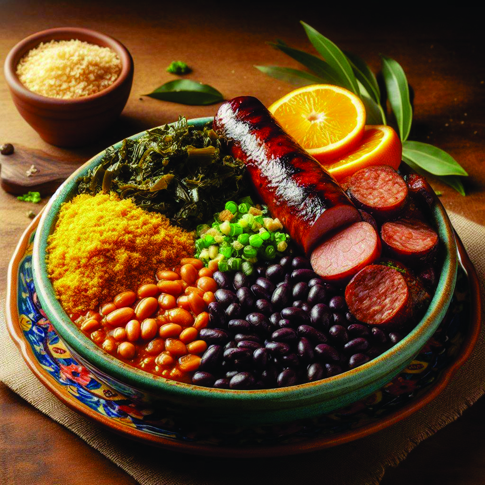
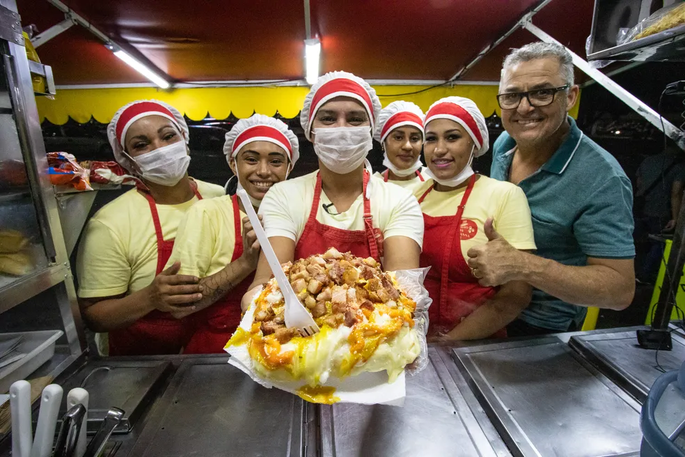

globe_location_pinLocalização |
Coordenadas | 23° 33′ 01″ S, 46° 38′ 02″ O |
|---|---|---|
| País | Brasil | |
| Unidade Federativa | São Paulo | |
| Municípios | 23 (Juquitiba, Embu-Guaçu, Itapecerica da Serra, Embu das Artes, Taboão da Serra, Cotia, Osasco, Barueri, Santana de Parnaíba, Cajamar, Caieiras, Mairiporã, Guarulhos, Itaquaquecetuba, Poá, Ferraz de Vasconcelos, Mauá, Santo André, São Caetano do Sul, São Bernardo do Campo, Diadema, São Vicente, Itanhaém) | |
| Distância até a capital | 1015 km | |
historyHistória |
Fundação | 25 de janeiro de 1554 (471 anos) |
contacts_productAdministração |
Distritos | 32 subprefeituras |
| Prefeito | Ricardo Nunes (MDB, 2025–2028) | |
| Vereadores | 55 | |
map_searchCaracterísticas geográficas |
Área total | 1 521,202 km² |
| Área urbana (IBGE/2019) | 914,5 644 km² | |
| População total (Censo de 2022) | 11 451 999 hab. | |
| Densidade | 7 528,3 hab./km² | |
| Clima | Subtropical úmido (Cfa) | |
| Altitude | 772m | |
| Fuso horário | Hora de Brasília (UTC-3) | |
edit_documentIndicadores |
IDH (PNUD/2010) | 0,805 — muito alto |
| PIB (IBGE/2021) | R$ 828 980 607,731 mil | |
| PIB per capita (IBGE/2021) | R$ 66 872,84 | |
add_linkWebsite |
||
5 curiosidades sobre São Paulo!
-
Maior cidade do Brasil e da América do Sul – São Paulo tem mais de 12 milhões de habitantes só na capital, e mais de 22 milhões na região metropolitana.
-
Diversidade cultural imensa – É considerada a cidade com a maior comunidade japonesa fora do Japão, além de grandes comunidades italiana, árabe, boliviana e portuguesa.
-
Av. Paulista “respira cultura” – além de ser um centro financeiro, abriga museus como o MASP, centros culturais, livrarias e eventos de rua.
-
Cidade que nunca para – São Paulo é famosa por ter restaurantes, padarias e serviços funcionando 24 horas por dia.
-
Clima maluco – em um único dia é comum vivenciar as “quatro estações”: manhã fria, tarde ensolarada, pancada de chuva e noite fresca.

